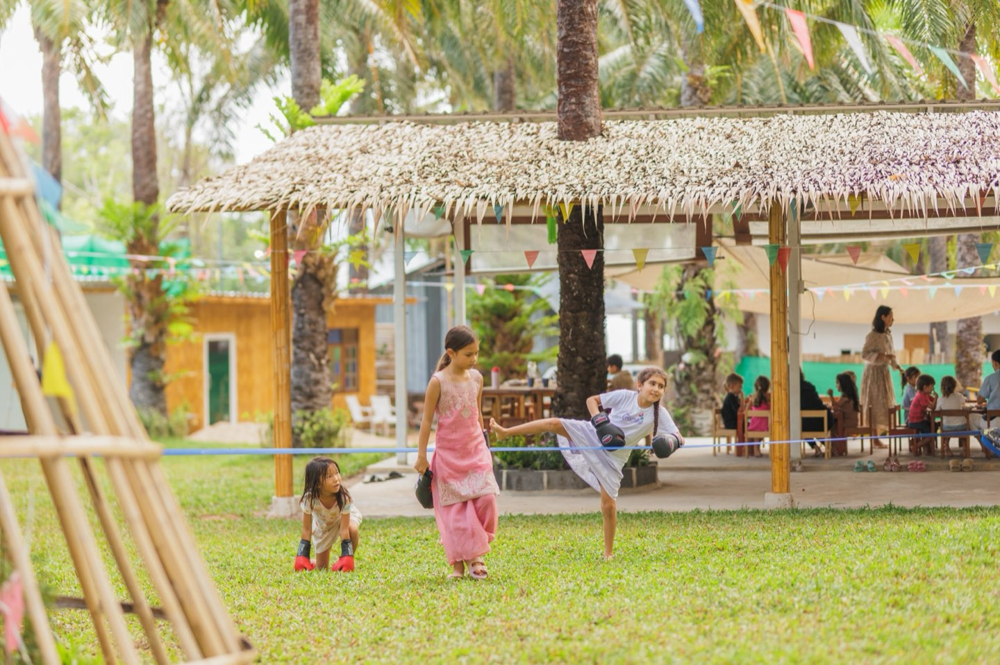
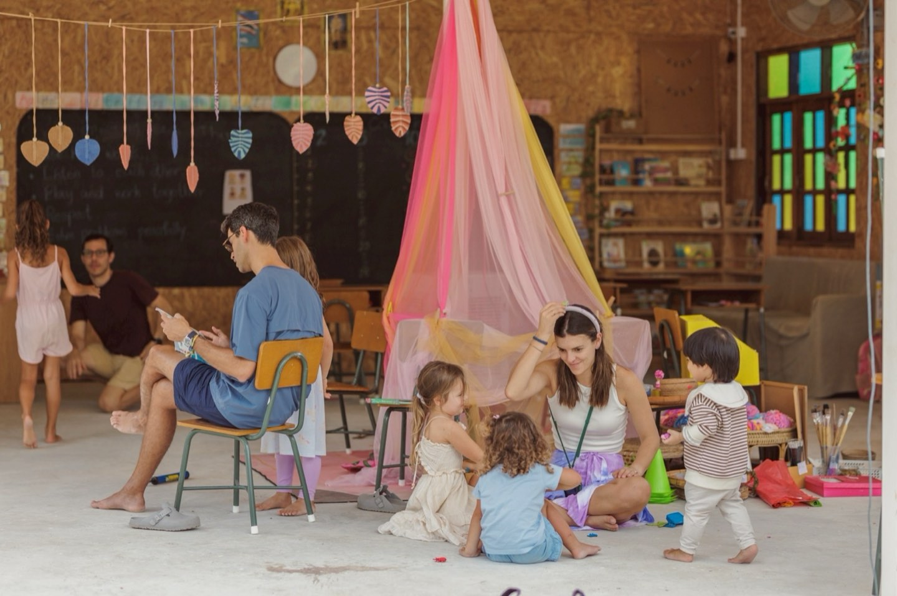
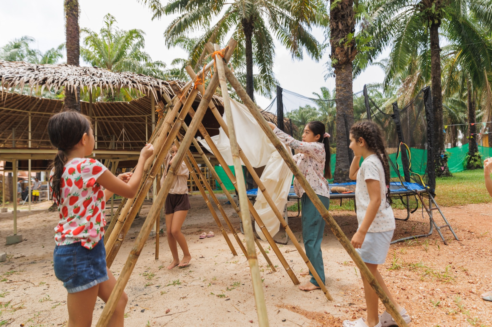
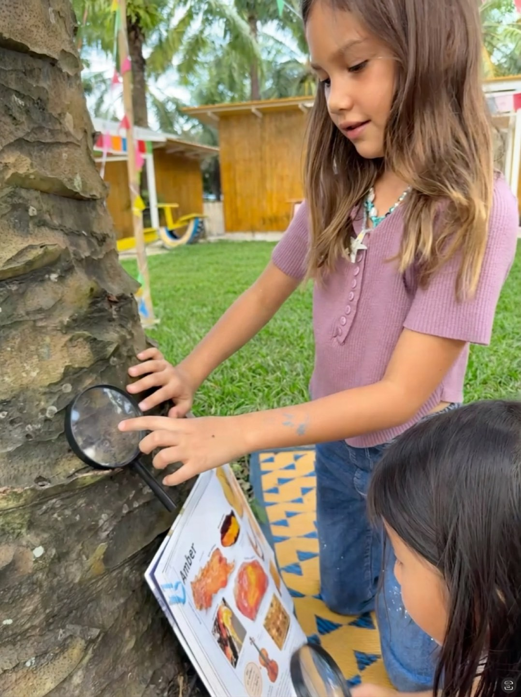
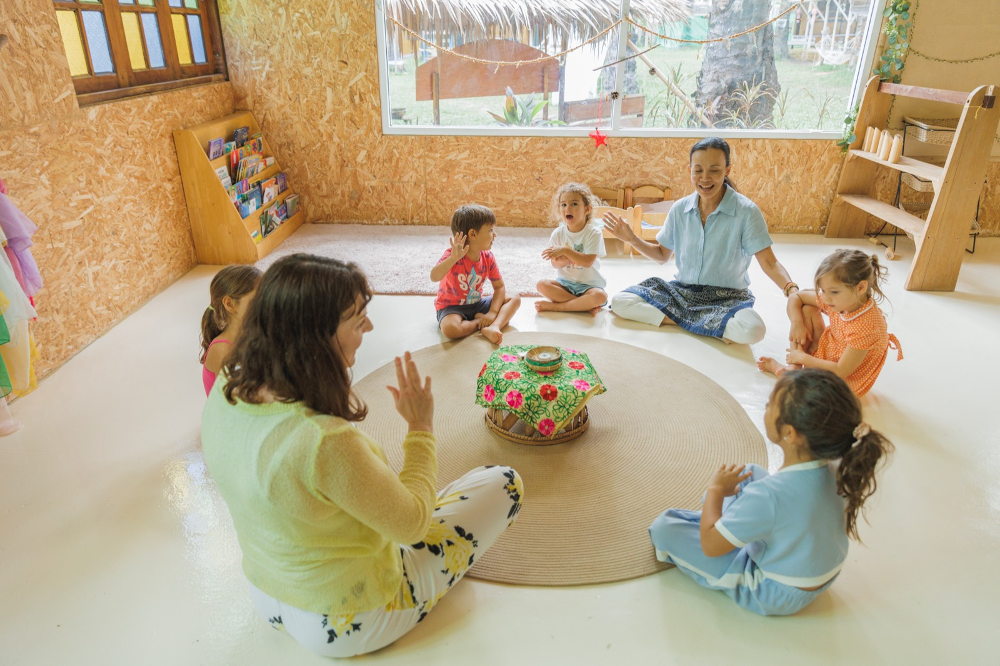
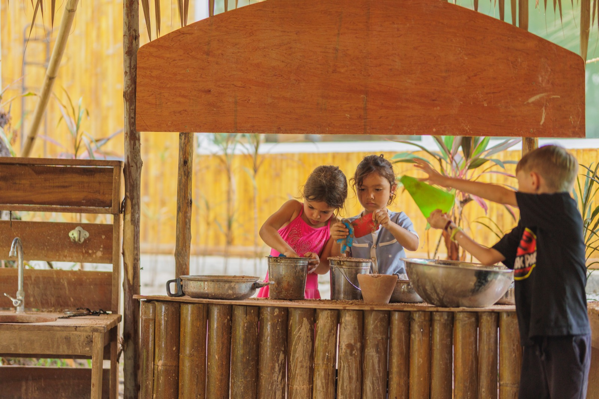
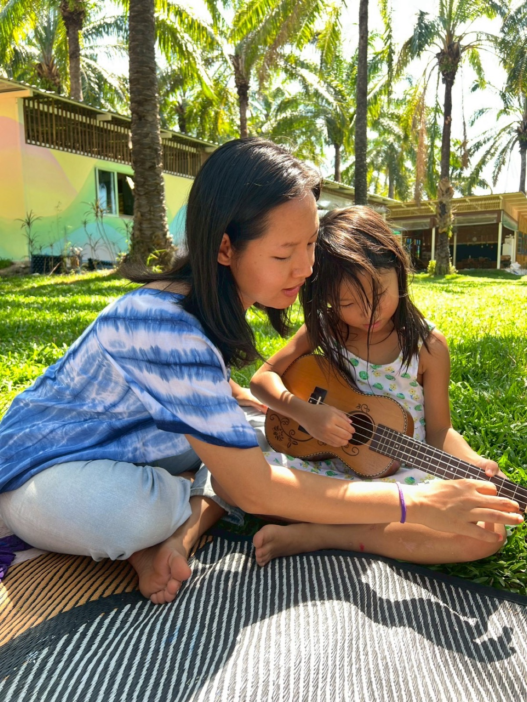
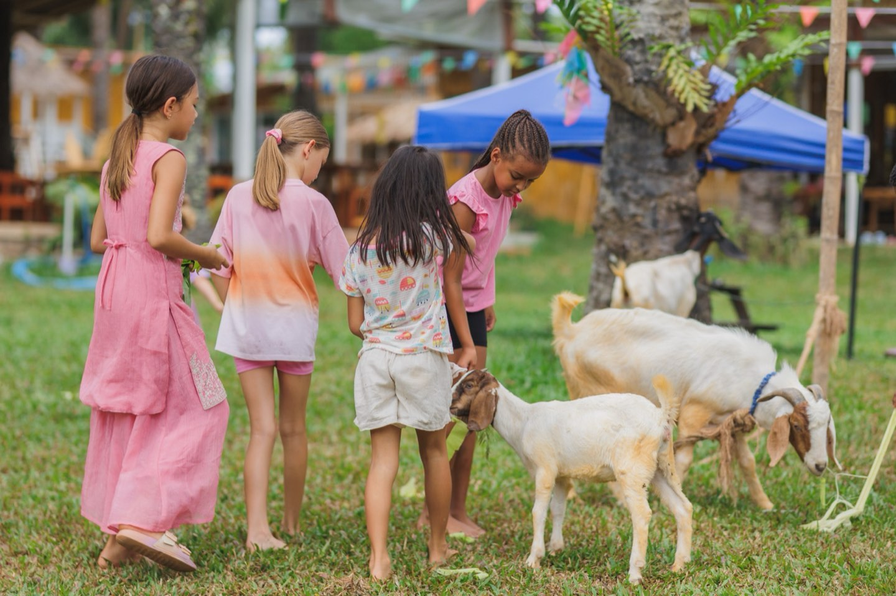
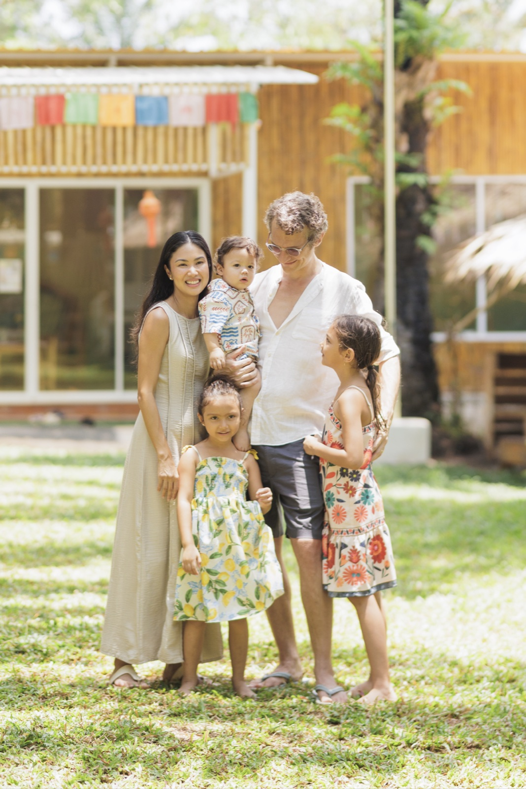

Curious by nature. In love with how children learn. Ready to build a daily social-emotional learning program in our kindergarten — one that sits alongside our established Waldorf-inspired rhythm and helps children grow up happy, emotionally capable, and learning at an exceptional pace.

We're a licensed international school on a beautiful 5,600-square-meter palm plantation in Cherngtalay, Phuket, and we teach outdoors, in nature, every day. Our Waldorf-inspired kindergarten has been running for several years, and we're now expanding the team to bring a dedicated SEL teacher into the classroom alongside our existing four teachers.

We're working on one of the most important questions in our lives: what should we teach children so they grow up happy, successful, capable, and ready for a future none of us can fully see? Almost every parent and teacher we know is asking some version of this question, and with AI reshaping what work even looks like, it's becoming louder.
We believe the answer is much clearer than the conversation suggests.
Decades of research, and the most successful school systems in the world — Finland's, for example — point clearly to one thing: a child pursuing something they've chosen will outwork any child pushed. Intrinsic motivation is the engine of real learning.
But intrinsic motivation doesn't start itself. Before a child can choose a project and stay with it, they need to be able to regulate their emotions and connect with the children around them. A child in the middle of a meltdown isn't choosing anything — they're just trying to feel okay. Social-emotional learning is the foundation that makes everything else possible.
The major institutions studying this question — the OECD, the WHO, Harvard's Center on the Developing Child, the World Economic Forum — converge on the same short list of human qualities that turn out to predict thriving lives far better than grades:

Take our daughter Rey. We didn't teach her to read until she was six, when she came to us asking — heavily — because a younger friend of hers was already reading and talking constantly about her favourite books. We searched for the best way to teach her, and the most effective material we found was a small phonics program made by a homeschooling mother — videos and exercises, intuitive, visceral, five minutes a day. Rey asked for those five minutes every morning and every evening. Within a couple of months, she was reading basic books. She started first grade, kept going, and two years later — in third grade — she reads at fifth- to seventh-grade level, fun books and science books alike. The whole thing started because she asked.
Once the reading was there, more followed. Rey came across a science book about amber — the fossilised resin of trees — and got fascinated. She started searching for it across the plantation, studying the trees it comes from. A couple of her friends got drawn in by her fascination, and together they started an "Amber Club." They studied every tree around the campus, kept journals, made observations almost scientific. Reading flowed into writing, into science, into working together. The human qualities and the academics, both being practiced every day, in something they had built themselves.

The more children develop these human qualities — starting with the ones that make all the others possible, emotional regulation and sociability — the more intrinsic motivation can do the work. That's true for Rey. It's true for every child. And it's what we've built Bamboo Valley to do.
5,600 square meters of palm plantation. Outdoor classrooms under the trees. Indoor rooms with air conditioning for the hottest hours. The whole campus is set up as a kids' version of an adult playground — a mud kitchen, a science corner, a library, workshops, areas where a child can start a real project and stay with it for hours. The connection to nature supports their emotional regulation, their physical health, their attention.
This is what we believe is the future of education. And it's what we're building Bamboo Valley around.

Our kindergarten has a rich daily rhythm — morning circle, baking day, painting day, outdoor free play, storytelling — and a team of four teachers who have made it work beautifully for several years. What we don't yet have is a dedicated social-emotional learning program that's taught proactively, observed systematically, and woven into the day with real intention. That's what we're hiring you to build.
Build the daily SEL curriculum. Emotional regulation, sociability, conflict resolution — taught as structured daily lessons, not just managed when something goes wrong. The morning circle is already a natural home for it. The outdoor environment — mud kitchen, animals, garden, the space itself — gives you tools most SEL programs can only approximate indoors.
Observe and measure. We want to know where every child is in their emotional and social development, what's improving, and what needs attention. You'll bring or build the observation tools that make this visible to us and to parents — not as a report card, but as a real picture of how each child is growing.
Let the environment do the work. A child learning to regulate doesn't need a worksheet — they need to care for an animal, plant something and watch it grow, work through a disagreement in the mud kitchen. You'll help shape the stations, activities, and daily moments so that emotional and social growth happens naturally, all day, not just during your lessons.

Doing this well takes a particular kind of teacher. Six things matter most.
High power, high energy. Children feel a teacher before they hear them. In a free-environment school, every adult's energy ripples through the room.
You believe children have unimaginable potential. Not as a hopeful posture but as a working conviction. The model only works if you operate from it every day.
You actively look for ways to bring it out. Your default mode is scanning — what would unlock this child, what would get that group going, what would the science corner need to come alive. Building this kind of school is a curator's job before it's a teacher's.
You want to help build the model. The daily rhythm is established and works. The SEL curriculum is what we're building together — you'll have real ownership of it from day one.
Outdoors energizes you. The plantation is most of your day, year-round. If being outside drains you, this work will too.
You find the right balance across the mix. Workshops, structured classes, direct teaching, focused practice — knowing when to facilitate, when to teach, when to let children run. The integration is the magic.

This won't fit if any of these ring true:

We read every application personally. Tell us a little about yourself, and we'll get back to you soon.
Thanks — we'll read this personally and get back to you soon.
